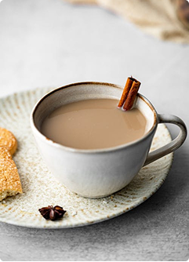
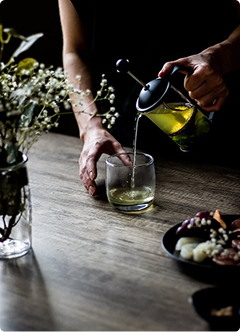
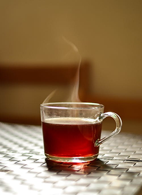
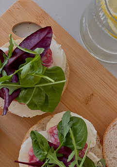
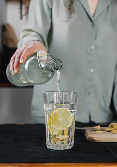

Curiosidades sobre alimentação
Suar emagrece?
O que você
precisa saber
-
1.Por que transpiramos?
Transpiramos para regular a temperatura corporal. Quando o corpo esquenta (por exercícios ou calor), as glândulas sudoríparas liberam suor, que ajuda a resfriar o corpo.
-
2.Suar emagrece?
Não diretamente. O suor não queima calorias de forma significativa. Ele pode até utilizar uma pequena quantidade de energia, mas a queima de calorias está mais ligada à intensidade e duração do exercício, e não à quantidade de suor.
-
3.Qual a função do suor?
A função principal do suor é prevenir o superaquecimento, resfriando o corpo enquanto evapora da pele. Não é um mecanismo para perder peso.
-
4.Cuidados com a hidratação
Suar demais pode levar à desidratação, que causa cãibras, fadiga e até problemas mais graves.
Veja também
-

Chá de Canela
Descubra os benefícios, usos e curiosidades desse chá aromático que pode ajudar na saúde, no bem-estar e até dar um toque especial às suas receitas do dia a dia.
-

Chá Verde
Aqui Você Encontra Fatos Rápidos E Interessantes Sobre Os Benefícios, Usos E Curiosidades Do Chá Verde Para A Saúde E O Bem-Estar No Dia A Dia.
-

Chá de Cardo-Mariano
Aqui Você Encontra Fatos Rápidos E Interessantes Sobre Os Benefícios, Tradições E Curiosidades Dessa Planta Conhecida Pelo Apoio À Saúde Do Fígado E Ao Bem-Estar Geral.
-

Chá de hortelã
Aqui Você Encontra Fatos Rápidos E Interessantes Sobre Os Benefícios Refrescantes, Usos Culinários E Curiosidades Desse Chá Tão Popular No Dia A Dia.
Video
Mais curiosidades sobre os chás
Veja este vídeo e descubra como os chás podem influenciar sua saúde, trazer bem-estar e ainda oferecer curiosidades que talvez você nunca tenha ouvido falar.
video
Saiba Mais
-

Diferença de Pães
Aqui Você Encontra Fatos Simples E Interessantes Sobre As Variações De Pães, Seus Ingredientes E Benefícios Para O Dia A Dia.
-

Prato Colorido
Aqui Você Encontra Fatos Simples E Interessantes Sobre Os Benefícios Dos Pratos Coloridos, Suas Combinações E Como Contribuem Para Uma Alimentação Saudável No Dia A Dia.
-

Alimentos Naturais
Aqui Você Encontra Fatos Simples E Interessantes Sobre Os Alimentos Naturais, Seus Benefícios, Cuidados Necessários E Como Eles Podem Contribuir Para A Saúde No Dia A Dia.
-

Benefícios da água
Aqui Você Encontra Fatos Simples E Interessantes Sobre A Importância Da Água, Seus Benefícios Para O Corpo E Como A Hidratação Correta Melhora A Saúde No Dia A Dia.
video
Mais curiosidades sobre os chás
Veja este vídeo e descubra como os chás podem influenciar sua saúde, trazer bem-estar e ainda oferecer curiosidades que talvez você nunca tenha ouvido falar.